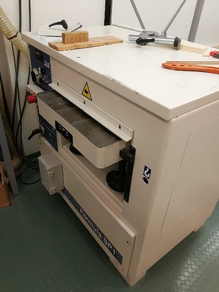
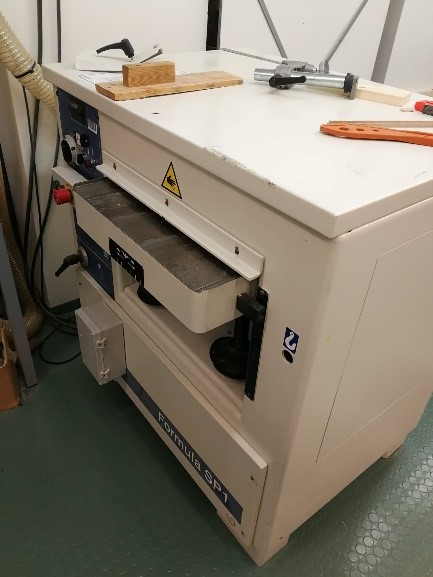

Puuntyöstön koneet ja laitteet
Tehtävän tavoitteena on tutustua peruskoulussa käytettäviin puuntyöstö koneisiin ja laitteisiin sekä puun ominaisuuksiin materiaalina; valmistamalla koneita ja laitteita käyttämällä 1200 mm mäntylaudasta esteettinen ja toimiva leikkuualusta.
Suunnittelu
Suunniteltaessa tuli pohtia useampia suunnitelmia, joista voisi sitten valita valmistettavan tuotteen. Halusin lisätä leikkuualustaani jonkin tapaista kolmiulotteisuutta perinteisestä litteästä leikkuualustasta poiketen. Halusin myös työhöni monikäyttöisyyttä, eli leikkaamisen lisäksi sitä voisi käyttää tarjoilualustana. Suunnittelinkin muutamia tarjottimen tyyppisiä alustoja. Yhteen kuitenkin lisäsin väliin jalat, jotka oli muodostettu samasta levystä. Tämä suunnitelma miellytti silmääni ja tuntui sopivalta taitotasooni nähden.
Suunnittelussa rajoitteena oli käytettävän materiaalin määrä. Saimme viimeistelemättömän 200 mm leveän mäntylaudan, josta tuli työstää liimapuulevy ja siitä suunnitelman mukainen leikkuualusta. Suunniteltaessa tuli myös muistaa koneiden asettamat rajoitteet työlle, eli turvalliset vähimmäispituudet käsittelyyn.
Suunnittelin myös, kuinka saisin rajoitteiden mitoissa mahdollisimman suuren pinta-alan ja sopivan leveys-pituus-suhteen liimapuulevylleni.
Turvallisuus ja käyttö
Ennen valmistusta jokaisen kanssa käytiin koneiden käyttö ja turvallisuusohjeet. Yleisenä turvallisuusohjeena varusteet tulee olla kunnossa ja hätäkytkimien paikat tiedossa. Vaatteista ei saa roikkua mitään naruja tai löysiä helmoja, jotka voivat jäädä kiinni koneisiin. Myös pitkät hiukset tulee olla kiinni. Suojavarusteista kuulosuojaimia ja silmäsuojia tulee myös käyttää.
Laitteiden käytössä tulee huomioida, ettei kukaan seiso liian lähellä tai alueella, johon voi lentää osasia. Laitteiden suojaukset tulee säätää oikein työskenneltävää materiaalia ajatellen. Laitteissa olevat sormisuojat tulee asettaa niin, ettei sormet mahdu teräalueelle. Otteiden on oltava aina rauhalliset ja sormien sisäänpäin käännetty. Koneiden käynnistyessä tulee odottaa tasaista käyntiä, jotta saavuttaa työstöön tarvittavat kierrokset. Kappaleita poistaessa laitteesta, laite tulee aina sammuttaa ja odottaa, kunnes se todella pysähtyy.
Turvallisuus huomioiden aloin valmistamaan tuotetta. Suunnitelman mukaisesti pitkä lauta katkaistiin ensin kahteen helpommin käsiteltävään palaan vannesahalla. Nämä palat oikohöylättiin toiselta lapelta ja molemmilta syrjiltä. Oikohöyläyksen jälkeen palat voitiin viedä läpi tasohöylästä, jolla saatiin laudasta erittäin tasaiset. Höyläsin lautaani muutamia kertoja, jotta sain kauniin puunsyykuvioinnin kunnolla esiin. Lopuksi halkaisin laudat kolmeen osaan sirkkelillä eli pyörösahalla.
 

Palojen asettelu ja liimaus

Asettelin palat melko kapeaksi, mutta pitkäksi liimapuulevyn muodoksi. Asettelussa tuli huomioida puunsyyn suunta, sillä puu kutistuu ja turpoaa veden sitoutuessa tai puun kuivuessa. Puu siis elää ja poikittainen kosteuseläminen voi olla voimakasta. (Piesala, 2011.) Näin ollen asettelin palat vuorotellen eri suuntaan. Pyrin myös huomioimaan asettelussa esteettisyyden ja pohdinkin melko pitkään, miten asettelisin puut. Yhdet palat minulla jäi liimauksen ulkopuolelle, niistä tuli tarjoiluastiaan jalat.
Asettelun jälkeen väleihin levitettiin liimaa, ja levy asetettiin tasaisesti puristuksiin. Liimauksen kuivuttua mittasin työhön katkaisukohdat ja katkaisin liimapuulevyn pyörösahalla. Asettelin työn väliin jaloiksi jätetyt kappaleet ja asetin työn uudestaan liimattuna puristuksiin.
Viimeistely
Jalkoja liimatessa toinen reuna levystä pääsi hieman ”tipahtamaan”. Tähän sain luvan käyttää ”laiskan miehen hiomakonetta” eli nauhahiomakonetta. Samalla sain pinnat viimeisteltyä ja hiottua. Viimeistelin puun kuvioinnin hiomalla sitä käsin hieman muutamasta kohdasta enemmän esiin. Viimeistelin vielä hienommalla hiomapaperilla käsin.
Pintakäsittelynä leikkuualustassa tai tarjoiluastiassa on kylmäpuristettu pellavaöljy. Sitä on lisätty kaksi kerrosta. Pellavaöljyn hapan ph-arvo tekee siitä hyvin mikrobeja kestävän. Pintakäsittely auttaa myös puhtaanapidossa ja lisää kestävyyttä. Pellavaöljy on myös luonnollista. (Puuproffa.fi, viitattu 17.5.2020.)
Valmiiseen tuotteeseen olen erittäin tyytyväinen. Työn jäljestä tuli siisti ja erityisesti puun kuvioiden asettelussa onnistuin hyvin. Yksinkertaisesta mallista tuli siistillä työllä esteettisesti kaunis ja puun ominaisuuksia korostava.